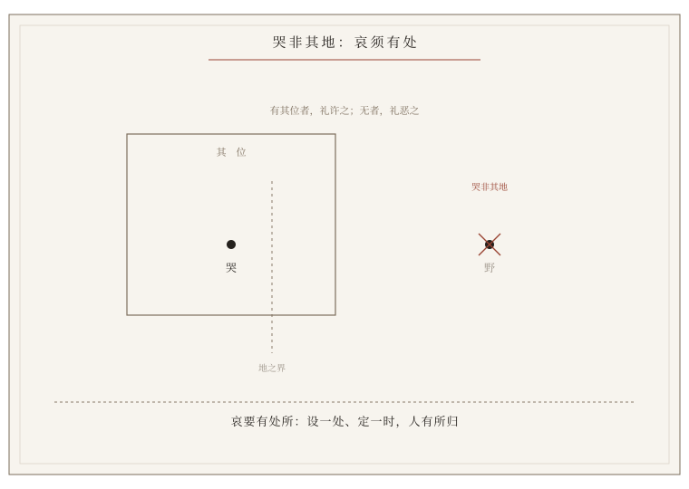

檀弓上 · 三·一百一十八 · 第 321 课
孔子恶野哭者。
说什么事：孔子不喜在野地哭的人。注说：「为其变众。」疏补其界：「哭非其地谓之野。」
落在哪一层：以「地」量哭。论「哀要有处所」。
为何编在此位：三百二十课论哭于庙，此课论哭于野。庙与野，一有一无：有处所者礼许之，无者礼恶之。
【经】孔子惡野哭者。
【注】為其變眾。《周禮》：「銜枚氏掌禁野叫呼、嘆呼於國中者、行歌哭於國中之道者。」
【疏】哭非其地谓之野，为变众，故恶之也。
恶 音乌路反。不喜，憎之。
野 疏：「哭非其地谓之野。」非谓郊野之地，谓非其位之处。
变众 惊动众人、扰乱众人的次序。
衔枚氏 《周礼》秋官之属，掌禁喧哗。枚，形如箸，衔于口中以禁声。
叫呼 高声呼叫。
叹呼 叹息而呼。
行歌哭 且行且歌且哭。
孔子不喜在不是其位的地方哭的人。因为这会扰乱众人的次序。
此章只有五字。注一句，疏一句，皆极短。
但一解就见其深：所恶的不是哭，是「非其地」。哭有五服之节、有朝夕之时、有次、有庙、有殡——皆有其地。地一失，哀就成了乱。
所以此章不是一个禁令，是一条界：哀要有处所。
第一层 「野」是地的判，不是人的判 疏一句定界：「哭非其地谓之野。」
哭本身不错。哭的地方错了。礼把「何处」当作一条独立的规范——与「何时」「何人」「何服」并列。
今人论礼，多重「做什么」，轻「在哪里做」。此章正说：地点本身就是礼的一部分。
第二层 「变众」：不是嫌吵，是怕乱 注「为其变众」。众者，次序也。一群人各在其位，则哀有序；一人在非其位处大哭，则众目移、众位乱。
这不是声学问题，是秩序问题。古代无扩音，一人之哭可动一里；故礼有专官（衔枚氏）管声音的位置。
第三层 《周礼》衔枚氏：古代的声音管理 注引《周礼》：「衔枚氏掌禁野叫呼、叹呼于国中者、行歌哭于国中之道者。」
一个官职，专管三件事：野中叫呼、国中叹呼、国中道上且行且歌且哭。三件都是「声在非其地」。可见这不是孔子一人的偏好，是一套制度。
第四层 一句之重 礼书中有许多这样的短章。一句是一条边线，不解释就过，一解释就见其深。
读礼之法：长章看其序，短章看其界。短章之所以短，是因为它只说一条界；界说明白，不必多说。
与今日何干 今人办丧，多在小区空地、路边搭棚哭祭。此章不说不可哭，说不可在「非其地」哭。今日可借其义：给哀一个处所，比禁止哀更为有用。设一处、定一时，则人有所归，不必向街而哭。
| 左 | 右 |
|---|---|
| 野哭 | 哭非其地 |
| 恶 | 非禁哭 |
| 变众 | 乱众之序 |
| 衔枚氏 | 掌声之位 |
| 叫呼、叹呼 | 野与国中 |
| 行歌哭于道 | 禁 |
| 五字 | 一条界 |
画一处野外之地，视点平视。画面中央偏左一道低矮土埂，埂外空旷，只有一株枯树与几块石头；埂上站着一个人，只画衣与背影，面朝空处。画面右侧远处，隐约一道城垣与门。不画人面、不写文字。赭色只用在人的衣摆一道，与城垣门框一道。
